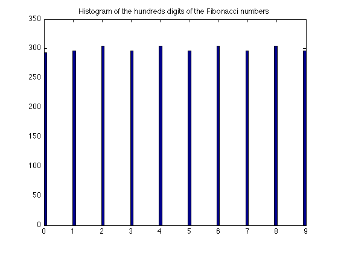
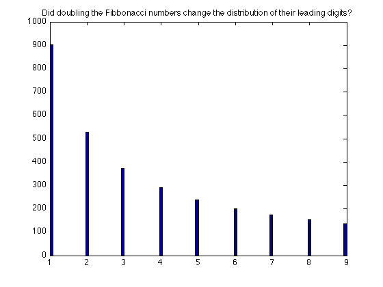

Contents
- The creator for vpi objects is vpi
- Numeric variables that are no more than 2^53-1
- For very large numbers > 2^53-1, use a character string of digits
- They are easily converted to a structure
- Fast arithmetic manipulation of vpi numbers
- Large powers are easy enough
- Modulo arithmetic - a test of Fermat's little theorem
- Arithmetic operations are pretty fast
- Work with arrays of vpi numbers
- Relational operators
- Concatenation using []
- Large Fibonacci numbers
- Conversion from long binary to VPI
- Conversion to written English numbers
- Numerical operations on a vpi number
- n'th root, as the integer part of nthroot(K,n)
- Trancendental functions, exp and log of a vpi number
- Compute nchoosek(n,k) exactly for large numbers
- A pair of formulaic test cases
- Compute the factors of a HUGE binomial coefficient
- Compute all of the factors of a large factorial
- All of the factors of a MASSIVELY large factorial, in only a few seconds.
- The GCD of two numbers
- The GCD of a set of numbers
- The LCM of two large numbers
- The LCM of a set of many numbers
- Use of these tools for primality testing
- Testing a large integer for primeness
- Mersenne primes
- Twin primes?
- Factoring moderately large integers
- List all quadratic residues of a number
- The Legendre symbol (a/p)
- Modular multiplicative inverse of an integer
- Linear Diophantine equations
- Euler's totient function
- The subfactorial
- Random (uniform, with replacement) vpi numbers
- Linear algebra: rank, vpi style
- Given a vector V, normalize it to have a unit norm, modulo some prime p
% This demo file provides some examples of how one might use % the vpi tools in this toolbox. % % I originally wrote the vpi tools to play with large integers, but I did % not have the symbolic toolbox. The beauty of matlab is that the lack % of a tool is no problem. Just write it! This entire toolbox took me only % a relatively short time (a man day or so) to write. I have spent more time % documenting it and cleaning it up to put it on the FEX than I did % writing the code. Since the first version of course, these tools have % been enhanced many times, with many new capabilities added. % % Author: John D'Errico % % e-mail: woodchips@rochester.rr.com % % Release: 5.0 % % Release date: 3/5/09
The creator for vpi objects is vpi
help vpi
vpi: Creator function for a variable precision integer
usage: M = vpi
usage: M = vpi(N) % N is a numeric variable
usage: M = vpi(n) % n is a character representation of an integer
Arguments:
N - A numeric (integer) variable, to be converted into a
variable precision integer. When used in this mode,
N must be no larger than 2^53-1.
A very long integer can be entered as a character string.
If N is not supplied, then the result is a variable
precision zero.
Examples of use:
INT = vpi --> creates a zero variable.
INT = vpi([]) --> creates an empty vpi variable
INT = vpi(1357902468)
--> Converts the scalar integer 1357902468
into a variable precision number.
INT = vpi('1234567890098765432100123456789')
-->
See also: double, single
Author: John D'Errico
e-mail: woodchips@rochester.rr.com
Release: 1.0
Release date: 1/19/09
Numeric variables that are no more than 2^53-1
Only scalar variables need apply. Matrices and vectors would not be terribly difficult to implement, but I've not done so.
INT = vpi INT = vpi(23)
INT = 0 INT = 23
For very large numbers > 2^53-1, use a character string of digits
Remember that we can not represent numbers larger than the exactly as a double precision number, so a digit string is the simple solution.
INT = vpi('1234567890123456789012345678901')
INT = 1234567890123456789012345678901
They are easily converted to a structure
struct(INT)
ans =
sign: 1
digits: [1 0 9 8 7 6 5 4 3 2 1 0 9 8 7 6 5 4 3 2 1 0 9 8 7 6 5 4 3 2 1]
Fast arithmetic manipulation of vpi numbers
INT = vpi(2999); INT + 5 INT*123456789 - 3
ans = 3004 ans = 370246910208
Large powers are easy enough
INT^963
ans = 212978873899267068530421981318944108474979941979127493319445995910027 041650019524589118323874506293264854448602118530205995707634867927494731 141550898459556946483180956718310856258621251641098376386639343199705527 319936090877567758914700730046820315138827793171785029428100107934521277 272771264206825683353051836439029479038463638691095651864985408228108934 909848649430212104033961308885479490839296281098238739005102864088974832 765359464702215651577426612949115132227280248078069602307670789866921121 757283560896474348925104618332553286017980604676433763843956276234127228 310506014513324319599890261052750253209996050828512831713819325927130129 782983790028167148523887362359091269273435443086727872459749610721614127 979308377914266439538578305833990821038485435045967597266784896037753098 479256872056913853971670797446088679149120306406094291637635708897365866 859204841736457678509896789971935433718754951153432265125210356299975181 242573506950795745087346409305931672934055680893182098888411842281002119 904822297540367901999770451712070387603987721642630296915665524331480395 906700826140250047389423959090708400213733494655598818575622382130854779 101600722641692106343141308514148271695579724653415167093218545358998213 105957193067990162524538059307648505074268329602550223850115257591485423 141629181644054031649970140587650774845684181595124110253859068483275299 891403475127872777405944271472004570023838612894897205526674837710571543 034851791469692498910472092982056703369548217106137874191520487673479165 364973316296722325487362428349147886113259444828696846342879993168031817 554530490037502300406940569958062990851486770744504783648217694465486908 467313491225687924489834170720543118001391762979195935997262622212890016 007040058583278011717317856490996665419939648127087019432145803572554064 575533419233937995524624767542344852126849659692430559423206056927194310 090894888330714977669651639812219973831594567255784282068333404106446698 800795509998089988973071343463047580977076005205034394428969813178911053 377527415324884870296966620142261787464158793465597183647829286899327373 318863336839294952471073093222702170114459395914872471863161538924419405 536445593384052805307431350134768767740559841643084008427289618965257607 679244536737154786091311490541821068575085426287033269569756949572295205 343891022845822955279691150553964109724336593113833916536466705315384287 811185130327708618202144773739132892943140738723320186069133332290669999 392646614934832275044613580356125146858447180731763323870503011917763347 856449790713582621379158798282029772623255321010358974298715974738083731 591376290171454702936809689248380149186689231198113341816325760275939413 935987633253837668791506581517048736425455632142866819681986735668041401 800627014925797446695325084377452700724110632880788816965834496896963559 865112010085218932407852125069140663614668043681732967451281064526150909 199914966055663172821204633232779190745139901325542209460735601646131706 273453309283566380912801946261297504191150678065619697793991154203983610 481350818740116942273718614059937896081191347562990240308881610691154296 683559329399390545470574319066717900933600622154159832970219407278018569 218355491568022630843321775023197814570673854111891159305264095151656321 724669463277012583082872931896496704389747729967747833048721860337475040 8731521759362613026534364398578175888999
Modulo arithmetic - a test of Fermat's little theorem
How about Fermat's little theorem? It states that, for prime numbers p,
mod(a^p - a,p) == 0
17 is clearly a prime number
p = 17;
Pick some arbitrary integer for a
a = vpi('5454677099790847579707977857');
a^p-a is a moderately big number
a^p-a
ans = 335022361270963469583456543769570835814347695878742453550602232864305 979389758689317343165968272103183317631630756717859543755217064544959280 574036371831319759439428507727066112713765769195840706760026849948309252 297370693568731088170405537974028160118125741494256867199051050337520753 686777214438608721485304292904468155064513839015451464894464729872085111 062011834922387960335257199931663764383672221030577878779221701968262846 4135032085469494345424818625637855773132800
but according to Fermat, the mod should be zero
mod(a^p - a,p)
ans = 0
Arithmetic operations are pretty fast
Obviously, there are limits to any computation. So if you want to compute with numbers that have many millions of digits, vpi might not be up to the task. But reasonably large numbers are trivial to work with.
For example, a moderately large factorial, with 158 digits
tic,INT = factorial(vpi(100));toc INT
Elapsed time is 0.025395 seconds. INT = 933262154439441526816992388562667004907159682643816214685929638952175 999932299156089414639761565182862536979208272237582511852109168640000000 00000000000000000
Square that number
tic,INT = INT*INT;toc
Elapsed time is 0.000737 seconds.
And add 1 to the result
tic,INT = INT + 1;toc
Elapsed time is 0.000270 seconds.
Work with arrays of vpi numbers
A = vpi(17); B = A.^(1:10)
B =
Columns 1 through 5
17 289 4913 83521 1419857
Columns 6 through 10
24137569 410338673 6975757441 118587876497 2015993900449
Compute the sum
sum(B)
ans = 2141993519226
Or the product
C = prod(B)
C = 47281437919523785105637649421170102074198138677247896785466116833393
Of course, we know that this product is just the product of sum(1:10)==55 powers of 17.
sum(1:10)
ans =
55
Taking the 55th root of C should recover 17, exactly.
nthroot(C,55)
ans = 17
A fun problem was to find a pair of numbers a and b, such that a^b ends in the final digits 000111222333444555666777888999.
a = vpi('5243565694659215822369469611294962999');
b = 3;
a^b
ans = 144171740165244022510882034108036581272754596627524185109988839479931 950239195970000111222333444555666777888999
Relational operators
All of the standard operators are provided, <, >, <=, >=, ==, ~=, as well as a few others like isequal and iseven.
a = vpi(2); b = vpi(3);
==
a*b == 6
ans =
1
>
a > b
ans =
0
<=
a <= 2
ans =
1
Test for an even number?
iseven(vpi(2)^127)
ans =
1
Concatenation using []
[3 2]*[a,b;b,a]*[a^3 b^4]'
ans = 1149
Large Fibonacci numbers
Fibonacci numbers can be fun to play with.
By the way, cell arrays would be one way to store vpi objects when you have many of them to store. But better is to use an array of vpi numbers. You can work with those arrays much as with any regular number in MATLAB. Don't forget to preallocate space for these arrays rather than growing them one element at a time.
n = 20; F = repmat(vpi(0),1,n); F(1) = vpi(1); F(2) = vpi(1); for i = 3:n F(i) = F(i-1) + F(i-2); end F
F =
Columns 1 through 11
1 1 2 3 5 8 13 21 34 55 89
Columns 12 through 20
144 233 377 610 987 1597 2584 4181 6765
Better is to use the fibonacci function. It is optimized to compute only a few Fibonacci (also Lucas) numbers, or the entire sequence quite efficiently. Thus we can compute the 5000th Fibonacci number along with the 5000th Lucas number in a small fraction of one second.
tic, [F_5000,L_5000] = fibonacci(5000); toc F_5000 L_5000
Elapsed time is 0.018660 seconds. F_5000 = 387896845438832563370191630832590531208212771464624510616059721489555 013904403709701082291646221066947929345285888297381348310200895498294036 143015691147893836421656394410691021450563413370655865623825465670071252 592990385493381392883637834751890876297071203333705292310769300851809384 980180384781399674888176555465378829164426891298038461377896902150229308 247566634622492307188332480328037503913035290330450584270114763524227021 093463769910400671417488329842289149127310405432875329804427367682297724 498774987455569190770388063704683279481135897373999311010621930814901857 081539785437919530561751076105307568878376603366735544525884488624161921 055345749367589784902798823435102359984466393485325641195222185956306047 536464547076033090242080638258492915645287629157575914234380914230291749 108898415520985443248659407979357131684169286803954530954538869811466508 206686289742063932343848846524098874239587380197699382031717420893226546 887936400263079778005875912967138963421425257911687275560036031137054775 4724604639987588046985178408674382863125 L_5000 = 867363714658958853836858990837346279887492969082666977189105168296032 437457928943194094450659340183118067592764081066578781405815712523222905 923521828164543178306428062949156965072596007824286305795272002893999008 902437989509053981977793368494102290220756352611289478561786225123836516 119871710645821997853641446618928553933299576550112936216927617570489075 813808350728627765184738385760898879117903858039941429947874039539633004 621357762641010286712142220431005956697065037124222603215919383497418339 098105605319178446629636083860155352921143942735485495877545317130353296 098698397464683112864659121507658836078297513391129277284605454813209544 392610850636568570658101962652872653748071140650434941658734777448207370 077434699146248491548582142221213015365928816562167262238774979750201386 034241421924145732399474311930142111947690289516257853684573558975072156 722157563570859476242996732150137092238341198859380870743351107200376928 897247896452942477605132937872537489692053931374673385300829341878493809 6912910101395864289472119273964080078127
Or compute every 10th fibonacci number
n = (0:10:100)'; [n,fibonacci(n)]
ans =
0 0
10 55
20 6765
30 832040
40 102334155
50 12586269025
60 1548008755920
70 190392490709135
80 23416728348467685
90 2880067194370816120
100 354224848179261915075
Or the first 3000 members of the sequence
F = fibonacci(1:3000);
What fun things can we see from this sequence? What for example, is the distribution of trailing (units) digits? See that the odd trailing digits are twice as likely to occur. This is easy to understand when you consider that the sum of an even plus an odd number is odd, but that the sum of two numbers with the same parity is even. Can there ever be two consecutive even numbers in the Fibonacci sequence?
D = cell2mat(trailingdigit(F,1));
hist(D,100)
title 'Histogram of trailing (lowest order) Fibonacci digits'

How about the other digits of the Fibonacci numbers? Are they uniformly distributed? Look at the tens digits.
sub1 = @(x) x(1);
D = cellfun(@(X) sub1(X),trailingdigit(F(7:end),2));
hist(D,100)
title 'Histogram of the tens digits of the Fibonacci numbers'

Or the third digits (hundreds).
D = cellfun(@(X) sub1(X),trailingdigit(F(12:end),3));
hist(D,100)
title 'Histogram of the hundreds digits of the Fibonacci numbers'
 High order (leading) digits are also interesting, perhaps more so than the low order (trailing) digits. The distribution of the leading digits will be roughly logarithmic, as predicted by Benford's law
D = cell2mat(leadingdigit(F,1));
hist(D,100)
title 'Histogram of leading (highest order) Fibonacci digits'

The second highest order digit?
sub2 = @(x) x(2);
D = cellfun(@(X) sub2(X),leadingdigit(F(7:end),2));
hist(D,100)
title 'Histogram of the second highest order Fibonacci digits'

Benford's law is somewhat paradoxical in how it works but it is logical in the extreme once you think carefully about it. Recall that the leading digits had a logarithmic distribution, so that the digit 1 appeared most frequently. Suppose we were to double all of those numbers? The 1's now become 2, or 3. On the other hand, any number that previously started with any of {5,6,7,8,9}, now starts with a 1.
D = cell2mat(leadingdigit(2*F,1));
hist(D,100)
title 'Did doubling the Fibbonacci numbers change the distribution of their leading digits?'
 We can also compute the modulus of immensely large Fibonacci numbers, and do so efficiently. For example, how large is the number fibonacci(17^17)?
Using Binet's formula, and discounting the smaller term, we expect to see roughly 1.7e20 digits in that number.
phi = (1+sqrt(5))/2; n*log10(phi) - log10(sqrt(5))
ans =
-0.349485002168009
1.74039140033178
3.83026780283157
5.92014420533135
8.01002060783114
10.0998970103309
12.1897734128307
14.2796498153305
16.3695262178303
18.4594026203301
20.5492790228299
However, if we only wanted, say the trailing 80 digits of that number, it is efficiently computed. This is far too large of a number to compute, even using the vpi fibonacci function.
tic,[Fn,Ln] = modfibonacci(vpi(17)^17,vpi(10)^80);toc Fn Ln
Elapsed time is 1.135267 seconds. Fn = 89878376144680994411626270815695580314894188580883157635516996057690106717033385 Ln = 74641717288457468846303050412997021797404316989134330675487636762456133231992923
Conversion from long binary to VPI
Either from a binary character string
INT = bin2vpi('10101011110111101011101100011111001101110110110101101111111111101')
INT = 24769083536127483901
or from a boolean numeric vector, here with 250 binary digits
B = round(rand(1,250))
B =
Columns 1 through 27
0 1 1 1 1 1 1 0 0 0 0 1 1 0 0 1 0 0 0 1 0 1 1 0 0 1 1
Columns 28 through 54
0 1 0 0 1 1 1 1 1 1 0 1 1 1 0 0 1 1 1 0 0 1 1 1 0 1 0
Columns 55 through 81
1 0 1 0 0 0 0 0 1 0 1 1 0 0 0 1 1 1 0 1 1 1 1 0 1 0 0
Columns 82 through 108
1 0 0 1 1 1 1 0 1 0 1 0 1 0 1 0 1 1 0 1 1 1 0 0 1 1 1
Columns 109 through 135
1 1 0 0 1 1 1 0 1 1 1 0 0 0 0 0 0 0 0 1 1 1 0 0 0 1 0
Columns 136 through 162
1 0 1 0 1 1 0 1 0 0 1 1 1 0 1 1 1 0 0 0 1 1 0 1 0 0 0
Columns 163 through 189
0 0 1 0 1 0 0 0 1 1 0 0 0 0 1 1 1 1 1 0 1 1 0 1 1 1 1
Columns 190 through 216
1 1 1 0 1 0 1 1 0 1 0 1 1 0 1 1 0 0 1 0 1 1 1 1 0 1 1
Columns 217 through 243
1 1 0 1 1 1 1 1 1 0 1 1 1 0 1 1 1 0 1 0 0 0 1 1 0 0 1
Columns 244 through 250
0 1 0 1 1 1 0
There should be roughly log10(2^250) = 75.25 decimal digits
INT = bin2vpi(B) struct(INT)
INT =
891183512403484229960298007653840184327166521869335361278051973310425500846
ans =
sign: 1
digits: [1x75 double]
Conversion to written English numbers
N = vpi(17)^7 vpi2english(N)
N = 410338673 ans = four hundred ten million, three hundred thirty eight thousand, six hundred seventy three
Numbers with up to 300 digits can be written out in this form
vpi2english(vpi('3215000000000000000000000000023000000000000010002118'))
ans = three sexdecillion, two hundred fifteen quindecillion, twenty three sextillion, ten million, two thousand, one hundred eighteen
Numerical operations on a vpi number
Some factoring operations need an approximate square root, the largest integer that is <= the true square root of the number.
See that when applied to a perfect square, sqrt is exact.
N = vpi('454652364568754565342346');
NN = N*N;
This result must be exactly zero
sqrt(NN) - N
ans = 0
When applied to a general, non-perfectly square vpi number, the sqrt has the property that it is the largest vpi such that sqrt(N)^2 <= N
R = sqrt(N)
R = 674279144397
Test that R has the required property. Both of these tests must be true.
R^2 <= N N < (R+1)^2
ans =
1
ans =
1
sqrt returns a second argument for vpi numbers. Since many numbers will not have an exact square root, the remainder for the square root will be returned. As it turns out, this is a simple way to test to see if a number is a perfect square.
[root,excess] = sqrt(N); excess
excess = 4188848737
But see that when the argument was a perfect square, sqrt returns that second argument as 0.
NN = N*N; [root,excess] = sqrt(NN); excess
excess = 0
was NN a perfect square?
excess == 0
ans =
1
n'th root, as the integer part of nthroot(K,n)
Other roots are also provided, nthroot of a vpi number generates the integer part of that root, along with the "remainder".
K = vpi(2)^1000
K = 107150860718626732094842504906000181056140481170553360744375038837035 105112493612249319837881569585812759467291755314682518714528569231404359 845775746985748039345677748242309854210746050623711418779541821530464749 835819412673987675591655439460770629145711964776865421676604298316526243 86837205668069376
R is the root, and excess is the extent that R^n falls short of K.
[R,excess] = nthroot(K,78)
R = 7233 excess = 775688164333558415250359021768249905866115688409133022986902759488025 386461482081770069948410361477827530533668766086478235634792445486165284 561637730012620750145606288968672983419963943258776330648325997660543302 885439435078553608349112067564647879494006343632592809627517257471085179 20799325271167
This must be zero, by definition
K - (R^78 + excess)
ans = 0
See that R^2 <= K <= (R+1)^2
R^78 <= K K <= (R+1)^78
ans =
1
ans =
1
nthroot should be correct down to the last integer digit of its result.
Subtract 1 from a large power of 3.
K = vpi(3)^600 - 1 R = nthroot(K,3)
K = 187392770388479398867540199203581234243084690309927815579669099832119 109631577636787261201544690308568077305879718599103790690876931190510851 395662173706350833849436138680295452568971179986081568436994650932937658 331413095266963571426008669356894837708778150144611948376922238799051320 00 R = 265613988875874769338781322035779626829233452653394495974574961739092 490901302182994384699044000
This difference should be exactly 1.
vpi(3)^200 - R
ans = 1
Trancendental functions, exp and log of a vpi number
For fun, I decided to provide a function for exp(x), when x is a vpi number. Of course, I only return the integer portion of that number.
For example, as a real number, exp(10) = 22026.4657948067. The vpi version of exp returns only the integer part of that number.
exp(vpi(10))
ans = 22026
For larger inputs, it is more difficult to compute all of the digits, since matlab only provides double precision floating point numbers. The built-in exp(x) returns a real number on double precision input as long as x <= 709. But, you only get about 16 digits.
exp(709)
ans =
8.21840746155497e+307
When x is a vpi number, exp returns all digits of the integer part.
exp(vpi(709))
ans = 821840746155497218924137238659781639324450596710030315229061982703574 462708167005853290438658142151349629488224122628470675317180389412999886 213955350420306158299337698235768727374318311563221236094197519246340610 430934738859848814209924246330941804321411588463116878834080316760008844 06465450902929447425878
Worse, for x > 709, MATLAB's floating point exponential yields inf.
exp(710)
ans = Inf
The vpi version of exp has no such problem.
exp(vpi(710))
ans = 223399476616171103125364445811681000656812286337946419939922579763369 439173505508238045208936075928608008858947959672204126540307964255760331 629484074081710600724815623037686564199430826371986947985157927836355814 874856465984698389900107606439843841800268119591413945009951691796042715 693932113514608158683164
Even for much larger inputs, we can get all the digits to the left of the decimal point.
exp(vpi(10000))
ans = 880681822566292158726149600764456100352000408559150893642457076276223 289527619868552473539448621652924098379134329497317215095115016650951467 421827504038351497150454828666829061411579898596190468496671331568440504 512320424283741693088662268411119531261248736306157130825578423757372324 658379641385504042632760829425405822532989390438288880633851379724810320 970461931535862712958962020133213231789100620005560192823702055054960744 106488038675822817543015969701836116858342356411837802979047362931242683 133615326622634701818928164861628311609420429542710102104854479309770396 341184956856962437358040494806507800305611248234310706939768988838103572 719553177149918816164869389495866367513917092658878386633373104455915942 784750496734929817918884442999022003277095299760867596150262616266305171 777282302738979735071417914248380816640047773816344807981464879156941540 939635570595461848722508214023022872095687057716391224703558862489681457 125696206361811870008044392766398944855189395226704809649825436154494929 789085478650745460301554616390060750656263463116936405615534571653449665 293942199704829315745683759157532785428060303526770231233960151417355272 001115724381881437001882173632506099103820043816584319640922178678956182 248380386647560910319613906977028042012595350064005030116983923462258465 113016443564644696546190409239155025960565906140090567903773667113088806 605030219103270185921677212513244181339984285056385364359762788953457937 311771772573484142890281029845557371897223786337259936663684704169390624 523165176158644547050633415731013959447347358529099467776552663358919981 882819689188076135141525552369745341763085767090439420116773646295138221 243143026072101119733072037175914834728834017397364352099551795873536382 080476147792826594608396994767641720419325558918146222508450110609948773 175836359320985550552962824382324034184301768643120625127472072346823496 675589981561654993502693087598772093270718197825161252464391732398520793 412109144245871778952303693217728989285496118004266772583852731417887098 557632459516441436325342198244359995570093953310672976587445611122514970 162483805279769381319862240941617920048893377142870046953514165120885380 844367802857973290173401470012325354089133064958333684745490999251934925 765427996124198117151156610343722768906951593708928417684713004860070721 617711156133230471383774368700794405437068353210157341213482558806694247 642112720292733094545540110849976835756983126016833214817952409587086730 166832471641022645606590425251611617825757952990060168018272174774116274 183114978847807655226750369679415010694393945223441886245012645867693935 612843946544406981593485190526320512911357649518588108908397501557339343 536341325922605800697462275865338812388929467546796855017340584470168553 326899006018782138719389457733243568792010781309543724999403619110664085 907920098788025256398020240156752798994244295156295479926612619024984451 692558333583287322480388471977651220888880854517109353080768933478070636 022409550558973856850373580935621239790298753873963585618197816086376431 204274591793196117511074057448679605478153111159683660789543087723632122 157732239413421820095004406551738193440767397371111265450881646138783742 959350108417104931122736731382839093405764231071023343693853856727684459 700280757999765201834795488651099450827088471147927877178056659312513949 462087523502241030063544773408719197042297451220244905287069101243303693 529214025211569931432501338370035419695172968686918777240819657051232659 369634204032223652496217867862094876927836678136750274477167368269674808 278925701696143548180774711222582149988437470502184055212368394109229552 692030895567303701213291721413320454206039953215487405252392840140682934 197574981502564648626032369859907696084532674585401209446962745391188527 590870889119585312360922607061853743963982813891045924088401227133905422 041315406158260577070074641011071171838311780547621487731243866656617016 586709155615880600830219974634163840124988545527821740860717783402442195 452152472165038200522599858658596701250045738342160531093370630928594394 189039289400195511578599355200749163264102795016034579567687951513341869 346910161607519537264948225601708889653828149394232614538233052499859909 819241545222912264609704284809947002100908968039248009861359493495960559 618290715413254015136170264096615354305084386454712372464784757038716481 39438207661491730635541494
Logs are available too, but there is no reason to compute the log as a vpi, instead log, log10, and log2 all return double precision numbers when applied to a vpi number.
log10(vpi(10)^1000) log10(vpi(2)) log2(2^53)
ans =
1000
ans =
0.301029995663981
ans =
53
Compute nchoosek(n,k) exactly for large numbers
n = 14565; k = 3002; tic,INT = nchoosek(vpi(n),k);toc INT
Elapsed time is 1.326259 seconds. INT = 114343281489241400605268364122853243913158056436019602566784730695026 497288173807784651134165223290703520152372370160409595140700713304614766 705183561189651420831261977415259413902558649056351240994690796592653127 781520803792308616734827698071508594059896849108814932917328847520882083 769488906911499313770101597117550456920472162564009659613351607810658763 611891255556518841501111050526705049967932007105454128103448292749699158 326218159361646876101669365886943224491579503935173873083553717205171615 168923232743320911925166782378239878288356158461727726590553927689690571 038169284715077999988866280339736047362657423171844556974227498836282713 735398778589819981083798615843729855846687969463938706679793996921958105 159297098053109956851149923931586686967397541453017126736279809060507069 121111451348050912641416128222756634103143388722548545192877808985653553 600406774554568467540380057266700576044119178973842321304633360271991023 352663241314770061949252776176888779190801928080723925677216646893362823 636468627598194331268082253841154168273613002353967015886703839814326840 548020442320740403983646509796741988835782901813610767039102090451060911 695806053922482286957307300214299770218596986075351544536339577242411753 924329924271991424806526045244470587617214018408679260732003399447619091 491676183702698092611022556907202817640319955938481482183374398980381604 266988232481444995730422630123963866503723554303216627790818498172632261 952866681099984088742064563078859992457135661410306015332227629576552561 894510750331453541168877758610481176282304984761118929185782278702518709 321739821960664117146711417880223925426667226313282600042097607952807028 786377444742956652695518758947052918653229854904045137515190660679963850 054629926834221863751110264437641227292264633093755003133241077302186728 965178111601606837185662476002928472939547248520504270164832903701758359 993912651168665970931419250567983248588637389681709182196496414698645989 715701570297799542343270059317592319480872961692678475299323389416066250 344060833478613434871876502769307365475626779135875846234514577744386921 741396728709702845931013245408755927045586974897067224336982928809137900 049123087446861896440475851408161037777026475344990218183784228188570974 363317561426017137706650510356986760517496562718063167103680642625140299 108574086346192235813971031059667958993519409450728477616854898058926765 494020106386344358131661730166691830217467716636436313003641397146031058 074666013619800507892841769971742503969263224334076607452510605784279233 308418222939917729582527944968396411087370304464220305645019853890785854 024192425490463841510100677702044857225556498287292873467561840487884466 298424264100823729987451652581331156326908016083491015235642968278572101 550321602819316133935945187532567229215716708783878685715875073614621912 845931973600583583860629699904368064691953469412442630468476569170991962 334018958392354631284556126160509302362166981327235208365647230011840017 856091321659176550736124072403919055952664909118809499828952850040150682 361378913662745819504131934940288621920857222950196201316436740655012001 471955920933847254012137907869451164578741872550206008358404175670339468 5217630574141698707296394714822106054484481055264000
Can we verify the above result is correct? One simple test is to compare the log of INT with that predicted by gammaln. Both of these results should be the same.
gammaln(n+1) - gammaln(k+1) - gammaln(n-k+1) log(INT)
ans =
7405.24769404769
ans =
7405.24769404769
A pair of formulaic test cases
As a test, the sum over k of the binomial coefficients nchoosek(N,k) is 2^N
N = 200; S = 0; for k = 0:N S = S + nchoosek(vpi(N),k); end
The sum was:
S
S = 1606938044258990275541962092341162602522202993782792835301376
Compare it to 2^N
vpi(2)^N
ans = 1606938044258990275541962092341162602522202993782792835301376
Another formulaic test case: sum{ k*nchoosek(N,k) } = N*2^(N-1)
N = 150; S = 0; for k = 1:N S = S + k*nchoosek(vpi(N),k); end
The sum was:
S
S = 107043576952946991079371447708712135228705996800
Compare it to N*2^(N-1)
N*vpi(2)^(N-1)
ans = 107043576952946991079371447708712135228705996800
Compute the factors of a HUGE binomial coefficient
Sometimes, you might want to compute a REALLY HUGE binomial coefficient. While vpi/nchoosek will do nicely for a few thousand digits, how about something with millions of digits? Itturns out that computation of the factors of that coefficient is actually rather easy (easy is always relative measure). I wrote binomfactors to solve the problem.
tic,[facs,count,lognck] = binomfactors(20000000,5000000);toc
Elapsed time is 10.781767 seconds.
The result has a few million digits.
lognck/log(10)
ans =
4884377.31965874
as well as a few hundred thousand distinct factors
numel(facs)
ans =
710328
Compute all of the factors of a large factorial
For other purposes, one might wish to work with really large factorials, without resorting directly to logs and gammln.
[facs,freps] = factorialfactors(1000)
facs =
Columns 1 through 27
2 3 5 7 11 13 17 19 23 29 31 37 41 43 47 53 59 61 67 71 73 79 83 89 97 101 103
Columns 28 through 54
107 109 113 127 131 137 139 149 151 157 163 167 173 179 181 191 193 197 199 211 223 227 229 233 239 241 251
Columns 55 through 81
257 263 269 271 277 281 283 293 307 311 313 317 331 337 347 349 353 359 367 373 379 383 389 397 401 409 419
Columns 82 through 108
421 431 433 439 443 449 457 461 463 467 479 487 491 499 503 509 521 523 541 547 557 563 569 571 577 587 593
Columns 109 through 135
599 601 607 613 617 619 631 641 643 647 653 659 661 673 677 683 691 701 709 719 727 733 739 743 751 757 761
Columns 136 through 162
769 773 787 797 809 811 821 823 827 829 839 853 857 859 863 877 881 883 887 907 911 919 929 937 941 947 953
Columns 163 through 168
967 971 977 983 991 997
freps =
Columns 1 through 27
994 498 249 164 98 81 61 54 44 35 33 27 24 23 21 18 16 16 14 14 13 12 12 11 10 9 9
Columns 28 through 54
9 9 8 7 7 7 7 6 6 6 6 5 5 5 5 5 5 5 5 4 4 4 4 4 4 4 3
Columns 55 through 81
3 3 3 3 3 3 3 3 3 3 3 3 3 2 2 2 2 2 2 2 2 2 2 2 2 2 2
Columns 82 through 108
2 2 2 2 2 2 2 2 2 2 2 2 2 2 1 1 1 1 1 1 1 1 1 1 1 1 1
Columns 109 through 135
1 1 1 1 1 1 1 1 1 1 1 1 1 1 1 1 1 1 1 1 1 1 1 1 1 1 1
Columns 136 through 162
1 1 1 1 1 1 1 1 1 1 1 1 1 1 1 1 1 1 1 1 1 1 1 1 1 1 1
Columns 163 through 168
1 1 1 1 1 1
All of the factors of a MASSIVELY large factorial, in only a few seconds.
tic [facs,freps] = factorialfactors(20000000); toc
Elapsed time is 0.479835 seconds.
Just how large is that number? It would have over 137 million digits, had we computed the actual number itself.
sum(log10(facs).*freps)
ans =
137334714.324818
We can verify that result by resorting to gammaln
gammaln(20000001)/log(10)
ans =
137334714.32482
The GCD of two numbers
The built-in gcd function
gcd(144,60)
ans =
12
gcd for vpi gives the same result
gcd(vpi(144),60)
ans = 12
But for very large numbers...
int1 = vpi('1235357889667342221345796785463432123456789979096348363656484858');
int2 = nchoosek(vpi(100),50)
int2 = 100891344545564193334812497256
gcd still works very nicely
tic,D = gcd(int1,int2);toc D
Elapsed time is 0.135240 seconds. D = 166
The GCD of a set of numbers
gcd(vpi(144),60,192,720)
ans = 12
The LCM of two large numbers
lcm(vpi('1234523565487151848'),vpi('1234433265364467'))
ans = 1523936956113689271619829492585016
The LCM of a set of many numbers
lcm(vpi(2),3,4,5,6,7,8,9,10,11,12,13,14,15,16)
ans = 720720
Use of these tools for primality testing
Some tests for primality of the number n require you to compute mod(a^d,n). However, to exponentiate and then compute the mod is inefficient. Better is to use powermod, which computes the result in far less time. For example, even the simple computation of mod(123^200,497) takes about a second on my old machine. (If you are really serious about primality testing, this toolbox may not be the place to do your work anyway. It might be a good tool to learn something though.)
tic,M = mod(vpi(123)^200,497);toc
Elapsed time is 0.046188 seconds.
See that powermod is far more efficient here
tic,M = powermod(vpi(123),200,497);toc
Elapsed time is 0.011439 seconds.
Testing a large integer for primeness
Use the isprime function for such a test. I've implemented several different methods that will give a good suggestion about whether a number is prime. One of these methods uses Fermat's little theorem. It tells us that is P is a prime, then for any integer a, that mod(a^(p-1),p) == 1. However, when p is not prime,that same formula will often yield some arbitrary other number, but rarely will you see 1. So the Fermat test for primality tries a random value of a, and looks to see if we get 1. If the result is 1, then we have a strong indication that the original number was prime. For example, is the number 271 prime? Pick some arbitrary value of a, say a = 12.
Use powermod to compute mod(a^(p-1),p)
powermod(vpi(12),270,271)
ans = 1
It was 1, so 12 is called a witness for 271 being prime. This suggests strongly that the original P was prime, but it does not absolutely prove that fact. We can check some other values of a to make us more certain.
powermod(vpi(27),270,271) powermod(vpi(182),270,271)
ans = 1 ans = 1
Of course, 271 is small enough that we can easily test it via the built-in function isprime.
isprime(271)
ans =
1
Try another number. For example 221. Is it prime? In fact, is is composite. 221 = 13*17
factor(221)
ans =
13 17
Apply the Fermat test.
powermod(vpi(27),220,221) powermod(vpi(182),220,221)
ans = 183 ans = 208
Very good. We see that two different values of a predict that 221 is composite, since the Fermat test yielded other values than 1. Had we tried this test with a = 38, we would have found something interesting.
powermod(vpi(38),220,221)
ans = 1
Thus 38 is a Fermat "liar", a number that fails to indicate that 221 was composite. It suggested wrongly that 221 was indeed prime. Yet if we try a few different values of a, most of them suggest 221 is composite. Whenever these tests predict that a number is composite, they are always 100% correct. It is only the false positive cases where "liars" exist, rarely predicting that a number is prime when it was not so.
The function isprime does this work for us, although for small enough vpi inputs, it just calls the built-in version of isprime. The limit for the built-in isprime is 2^32. Numbers this large have a low probability that they are Fermat liars. so two tests will generally be sufficent.
P = vpi(2)^37 - 1;
Tell it to do 3 independent tests. The result will be a compilation of all three tests.
ntests = 3; isp = isprime(P,ntests)
isp =
0
Is P truly prime? No. So the Fermat test was correct in its prediction. The vpi version of factor will give us the factors though.
factor(P)
ans =
223 616318177
Mersenne primes
We know that for some values of p, when p is prime, that 2^p-1 is a Mersenne prime.
For example, one such Mersenne prime is
p = vpi(2)^61 - 1
p = 2305843009213693951
A simple test to apply that is known to be 100% accurate for Mersenne primes is the Lucas-Lehmer test. I'll try it here for 2^127-1.
vpi(2)^127 - 1
ans = 170141183460469231731687303715884105727
Apply the Lucas-Lehmer test for this value of p
[tf,S] = mersenne(127);
tf
% 2^127-1 is prime IFF S{end} is zero
S(end)
tf =
1
ans =
0
Twin primes?
{3,5}, {5,7}, {11, 13}, and {17, 19} are all twin prime pairs. Can we generate a large pair of twin primes? This uses a cute little trick that can generate large twin prime pairs with some efficiency.
Start with a large even number that is a product of many distinct small primes. This will do nicely:
N = vpi(2)*3*5*7*11*13*17*19*23*29*31*37*41*43*47*53
N = 32589158477190044730
Use some small twin prime pairs that were not factors of N.
tp = {[59,61],[71,73],[101,103],[107,109], ...
[137,139],[149,151],[179,181],[191,193]};
for i = 1:length(tp)
res = [isprime(N - tp{i}(2),1) isprime(N - tp{i}(1),1)];
if all(res)
disp('Twin prime pair found')
disp(N - tp{i}(2))
disp(N - tp{i}(1))
end
end
Twin prime pair found 32589158477190044591 32589158477190044593 Twin prime pair found 32589158477190044537 32589158477190044539
Factoring moderately large integers
The built-in factor is limited to no more than 2^32, so any number beyond that cannot be directly factored. One can modify the built-in factor to accept all numbers up to 2^53-1 in theory, but this is still pretty limited since 2^53 = 9.0072e+15. Larger numbers than that are easily factored using the vpi version of factor, which uses Pollard's rho method. For example, here are a few test cases:
A number with 14 digits
f = factor(vpi('11111111111111'))
f =
11 239 4649 909091
Show that these were the correct factors
prod(f)
ans = 11111111111111
A number with 15 digits
f = factor(vpi('111111111111111'))
f =
3 31 37 41 271 2906161
A number with 16 digits
f = factor(vpi('1111111111111111'))
f =
11 17 73 101 137 5882353
A number with 17 digits. Note that this number is the product of only a pair of quite large primes, but even here factor will succeed. I've intentionally set the maximum number of iterations low to force it not to try too hard with its main algorithm before resorting to a secondary approach that will succeed here.
f = factor(vpi('11111111111111111'),20)
f =
2071723 5363222357
A number with 18 digits
f = factor(vpi('111111111111111111'))
f =
Columns 1 through 8
3 3 7 11 13 19 37 52579
Columns 9 through 9
333667
A number with 19 digits
f = factor(vpi('1111111111111111111'))
f = 1111111111111111111
A number with 20 digits
f = factor(vpi('11111111111111111111'))
f =
11 41 101 271 3541 9091 27961
A number with 21 digits
f = factor(vpi('111111111111111111111'))
f =
3 37 43 239 1933 4649 10838689
A number with 30 digits
f = factor(vpi('111111111111111111111111111111'))
f =
Columns 1 through 8
3 7 11 13 31 37 41 211
Columns 9 through 13
241 271 2161 9091 2906161
Numbers with two large prime factors are the most difficult to factor in general.
p = primes(1000); int = prod(vpi(p(9:9:end)))
int = 1707924908543601972239594181806030471743108393
int has 46 decimal digits, but is not that terribly difficult to factor.
f = factor(int)
f =
Columns 1 through 13
23 61 103 151 197 251 307 359 419 463 523 593 643
Columns 14 through 18
701 761 827 883 953
List all quadratic residues of a number
quadraticresidues(17)
ans =
0 1 2 4 8 9 13 15 16
See that quadraticresidues did indeed find all possible residues of 17.
unique(mod((0:16).^2,17))
ans =
0 1 2 4 8 9 13 15 16
The Legendre symbol (a/p)
The Legendre symbol is a useful function in number theory when working with quadratic residues, along with its close cousin, the Jacobi symbol , which applies when p is composite. These functions have uses in the areas of computational number theory, prime number testing and integer factorization.
p = 17;
When a is a multiple of p, the legendre symbol is zero
legendresymbol(51,p)
ans =
0
When a is not a quadratic residue, the legendre symbol will be -1
legendresymbol(3,p)
ans =
-1
When a is a quadratic residue, the legendre symbol will be +1
legendresymbol(15,p)
ans =
1
Try legendresymbol on a large prime number p
p = vpi('659551234435459');
Yes, I chose p to indeed be a prime.
isprime(p)
ans =
1
Build a number for which we positively know the quadratic residue. Do this by picking some arbitrary integer x
x = vpi('365481861941');
And square x,
x^2
ans = 133576991407860184287481
then compute the remainder modulo p
a = mod(x^2,p)
a = 510841349074089
Clearly a must be a quadratic residue for the prime p, so (a/p) is known to be 1.
legendresymbol(a,p)
ans =
1
Recovering x is more difficult. In fact, x is not even uniquely defined. Generally, there will be a second value of x for prime p that when squared (mod p) yields the same value. See that we get the same residue for both x and p-x.
mod(x^2,p) mod((p-x)^2,p)
ans = 510841349074089 ans = 510841349074089
When p is composite, quadratic residues get slightly more complicated.
p = 360; quadraticresidues(p)
ans =
Columns 1 through 27
0 1 4 9 16 25 36 40 49 64 76 81 100 121 124 136 144 145 160 169 180 184 196 216 220 225 241
Columns 28 through 36
244 256 265 280 289 304 316 324 340
Which numbers x leave a residue of 100? There are 4 of them.
x = 1:359; find(mod(x.^2,p) == 100)
ans =
10 170 190 350
But there are many more numbers that leave a residue of 121
find(mod(x.^2,p) == 121)
ans =
11 29 61 79 101 119 151 169 191 209 241 259 281 299 331 349
And more yet that leave a residue of 9
find(mod(x.^2,p) == 9)
ans =
3 27 33 57 63 87 93 117 123 147 153 177 183 207 213 237 243 267 273 297 303 327 333 357
Modular multiplicative inverse of an integer
Compute the multiplicative inverse of a, modulo N. Note that for the multplicative inverse to exist, a and N must be coprime or relatively prime .
N = vpi('484816416515611681813');
a = 27;
ainv = minv(a,N)
ainv = 89780817873261422558
ainv has the property that mod(a*ainv,N) == 1
mod(a*ainv,N)
ans = 1
Of course, if a and N are not coprime, the multiplicative inverse will not exist. So for example, 3 will have no inverse in the ring of integers modulo 15.
minv(3,15)
Warning: a and p must be relatively prime, gcd(a,p) == 1
ans =
[]
Linear Diophantine equations
Can we find integer variables x and y such that A*x - B*y = 1, where A = 23 nd B = 97?
A = 23; B = 97; [x,y] = lineardiophantine(A,-B,1)
x = 38 y = 9
Check that this is a solution. We should get 1 as the result here.
A*x - B*y
ans = 1
Try it for much larger values, solving for A*x - B*y = C.
A = vpi('891172402'); B = vpi('1292626020223'); [x0,y0,xt,yt] = lineardiophantine(A,-B,17)
x0 = -10808395395 y0 = -7451609 xt = 76036824719 yt = 52421906
This time, our check in the linear combination should be 17
A*x0 - B*y0
ans = 17
We can find other solutions using xt and yt
x = x0 + 2*xt y = y0 + 2*yt
x = 141265254043 y = 97392203
It also works in the original equation
A*x - B*y
ans = 17
Euler's totient function
The number of positive integers less than N, that are relatively prime (coprime) to N.
P = factorial(vpi(23)).^2; totient(P)
ans = 109330370125036580984868483051080908800000000
The subfactorial
The (Subfactorial) of a natural number N, known as the number of derangements of a set of size N, is given by subfactorial(N), and is often written as !N. A derangement is a permutation that leaves no element in the set fixed in the original location. The general formula for !N is
factorial(N)*sum(((-1)^k)/factorial(k))
where the sum is taken over the integers k = 0:N. The subfactorial function grows as fast as does the factorial.
subfactorial(0:30)
ans =
Columns 1 through 2
1 0
Columns 3 through 4
1 2
Columns 5 through 6
9 44
Columns 7 through 8
265 1854
Columns 9 through 10
14833 133496
Columns 11 through 12
1334961 14684570
Columns 13 through 14
176214841 2290792932
Columns 15 through 16
32071101049 481066515734
Columns 17 through 18
7697064251745 130850092279664
Columns 19 through 20
2355301661033953 44750731559645106
Columns 21 through 22
895014631192902121 18795307255050944540
Columns 23 through 24
413496759611120779881 9510425471055777937262
Columns 25 through 26
228250211305338670494289 5706255282633466762357224
Columns 27 through 28
148362637348470135821287825 4005791208408693667174771274
Columns 29 through 30
112162153835443422680893595673 3252702461227859257745914274516
Columns 31 through 31
97581073836835777732377428235481
In fact, Stirling's formula for the factorial will convince you that for larger values of N, the limit of factorial(N)/subfactorial(N) must approach exp(1).
format long g for k = [2 3 4 5 6 7 8 9 10 12 15 20 30 50] disp([k,exp(log(factorial(vpi(k))) - log(subfactorial(vpi(k))))]) end
2 2
3 3
4 2.66666666666667
5 2.72727272727273
6 2.71698113207547
7 2.71844660194175
8 2.71826333176026
9 2.71828369389345
10 2.71828165766641
12 2.71828182735187
15 2.71828182845937
20 2.71828182845905
30 2.71828182845905
50 2.71828182845905
Random (uniform, with replacement) vpi numbers
A random and uniformly distributed vpi number, chosen from the set [0:N] with replacement. Pick 10 of these numbers from that set.
N = vpi('6892956956565696956526565325447241412131313156166151')
R = randint(N,[10,1])
N = 6892956956565696956526565325447241412131313156166151 R = 3004223032585058835370932428285067799246575162614468 5468098468918447881391137412240112783026777034594720 3231300520530555732106006029190043812177866866430767 2117810174876155993757375619070023243319575485673755 4199310871673971330119389499790251041262884914314493 1271437140299795149920136337457084528618616668122461 5972484685425577020591064553365977329784962431117362 2221123305548500092691669883791083496936417963589022 6165609280438115692333458171935330013768123870819915 2344800999863540812193486777715144672576970405737920
Linear algebra: rank, vpi style
What is the rank of a matrix, mod p? The modrank function uses row operations to reduce the rows of a matrix, modulo p. This shows the rank of the matrix.
M = vpi(magic(5)) p = 26; modrank(M,p)
M =
17 24 1 8 15
23 5 7 14 16
4 6 13 20 22
10 12 19 21 3
11 18 25 2 9
ans =
4
Given a vector V, normalize it to have a unit norm, modulo some prime p
This is possible as long as p is prime.
First, I'll pick the smallest prime that exceeds 10000000000000
p0 = vpi('10000000000000'); i = 1; while ~isprime(p0+i) i=i+2; end p = p0+i
p = 10000000000037
Choose a random vector V, in this case of length 10.
V = randint(vpi('10000000000000'),[10,1])
V = 9396731061900 7128412623097 9389070212590 5309559403535 218029817795 8203910811838 2874960577744 8673796661273 8602108122370 5506323685217
and compute the norm(V)^2 using a dot product, all done modulo p
K = mod(V'*V,p)
K = 5968122517611
Scale V by the modular inverse of the modular square root. The square root operation will not always have a solution.
S = minv(modroot(K,p),p) V = mod(V*S,p)
S = 227494233949 V = 3804302545302 7833489674938 8633575676597 9434979258045 7130051374886 8099023787875 5025801900294 8393986867658 7793259347899 9041200344002
See that V now has the property that mod(V'*V,p) == 1
mod(V'*V,p)
ans = 1